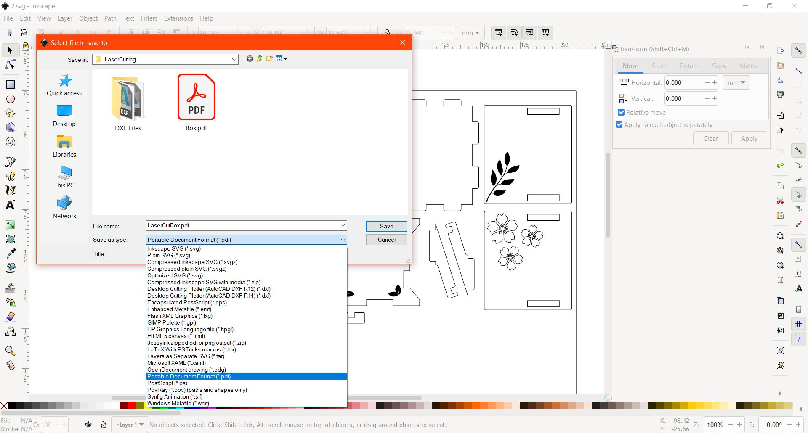

Laser Cutting
Laser Cut Box with Lid
Computer Aided Design (CAD)
#1 Setting Parameters, go to Modify > Change Parameters, click "+" to add new Parameter.
The parameters allows users to change the dimensions of the 3D model.
#2 Create an offset plane, go to Construct > Offset Plane
#3 Create a new sketch on that plane. Using 2-point rectangle, draw out the base of the box, use "Sketch Dimension"
and key parameter name. Use the "Tab" key to toggle between length and width.
#4 Draw 2 construction lines. Use "Mirror" to create the same sketch on the other side.
Select the objects to be mirrored and the construction line as the mirror line.
#5 Extrude the selected proflies by "-thickness" or "thickness" depending on the direction.
#6 Create an new sketch on the tab at right side and draw out the right side of the box using the same method for the
base. Ignore the dimension values as it can be changed anytime.

#7 Extrude the selected proflies by "-thickness" or "thickness" depending on the direction.
#8 Create another new sketch on the front plane and draw the front of the box using the same method for the base.
For the height, use "height-thickness". Use "Project Geometry" to project the edges of the 3D model, go to Create >
Project/Include > Project. Extrude the selected proflies by "-thickness" or "thickness" depending on the direction.
#9 To create the same body for the other side , use "Extrude". Select the profile to be extruded, for Start select
"Object" and select the starting point of the extrusion. For Operation, select "New Body".
#10 Create a new sketch on the top of the front part of the box, draw the lid and extrude it out by "thickness".
#11 Based on step #9 create the left side of the box.
#12 Create sketch on the lid of the box and draw out 2 slots, use "Mirror" so that you only need to draw one.
The length and width should be 20mm and "thickness" respectively. Using "Extrude" cut out the slots.
#13 Create sketch on the right side of the box use "Point" which under "Create" to mark out the position of the hole.
Use the "Hole" command to make a hole for the hinge. For the diameter, use the parameter "hole".
#14 Create a sketch on the side of the slot. Draw out the supports. Dimension the thickness of the support to "hole-1.3mm".

#15 Extrude the profile by "thickness". Based on step #9 create another support for the other side.
#16 Create a sketch on the slot of the support. Project Geometry the edges of the supports and draw out the hinge.
#17 Extrude the profile by "thickness". Add filets to the corners.
#18 For the back of the box, use the "Extrude" command to reduce the height of the back part.
This necessary for the box to be able to open. The amount of clearance may vary depending on the position of the hinge.
#19 Create another sketch to mark out the hole for the hand crank and use the "Hole" command.
The position of the hole depends on the music box mechanism.
#20 By changing the visibility of the parts, add filets to the edges of the tabs.
#21 The box is now completed.
Exporting and Preparation for Laser Cutting
#1 Create sketch on the profile you want to laser cut out and rename it.
Right click on the sketch and save it as DXF.
#2 Using Inkscape, import all the DXF files and arrange the profiles.
#3 To decorate the box, you can import images into it.

#4 Lastly, save the file in PDF format.
Laser Cutting & Assembly Process
Engraving
Cutting
Parts
Assembly
#1 Glue the parts for the box and lid, leave one side empty.
#2 Insert the music box mechanism and glue it to the base.
#3 Put the hinge piece through the hole and connect the lid, glue the pieces if they are loose.